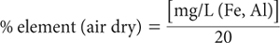

Values for pyrophosphate-extractable Fe are used in some soil classification systems to identify podzolised soils. The pyrophosphate reagent will remove Fe-organic complexes and Al-organic complexes (Taylor 1987) by acting as a dispersing agent. Organic matter containing Fe and Al is peptised along with Fe minerals of high surface area and appropriate surface chemistry, such as ferrihydrite (Parfitt and Childs 1988), but more importantly geothite (T.A. Beech, pers. comm.; McKeague et al. 1971).
When performing this analysis, especially on soils that contain large quantities of very fine, poorly crystalline materials, failure to obtain suitably clear extracts can cause analytical difficulties. Erroneously high values by flame spectrometry can be avoided by ‘clearing’ soil extracts before analysis using high speed centrifugation (20 000 rev/min), usually in conjunction with added ‘Superfloc’ (Ballantyne et al. 1980; Blakemore et al. 1987). When pyrophosphate-extractable C is required to confirm the presence of a spodic horizon in Soil Taxonomy (Method 6C1), however, ‘Superfloc 127’ should not be included prior to centrifugation.
0.1 M Sodium Pyrophosphate
Dissolve 44.61 g sodium pyrophosphate (Na4P2O7.10H2O) in deionised water and dilute to 1.0 L.
Superfloc Solution
Dissolve 2.0 g Superfloc 127 or similar (supplied by Cyanamid Australia Pty Ltd) in deionised water and dilute to 1 L.
Combined Fe and Al (and Si) Primary Standards
As for Method 13A1.
Combined Fe and Al (and Si) Working Standards
Dispense 0, 2.5, 5.0, 12.5, 25.0, 37.5 and 50.0 mL Combined Fe and Al Primary Standard into 500 mL volumetric flasks. To each add 100 mL 0.1 M Na4P2O7.10H2O and make to volume with deionised water. These solutions contain 0–100 mg/L of Fe, Al (and Si). For a 1:100 soil/solution ratio and a 1+4 dilution of sample extracts only, soil concentrations are 0, 0.25, 0.5, 1.25, 2.5, 3.75 and 5.0% Fe and Al (and Si), respectively.
Shake 1.0 g of air-dry soil (<0.5 mm) with 100 mL 0.1 M Na Pyrophosphate solution in 250 mL bottles on an end-over-end shaker continuously for 16 h at 25°C. Add 5 drops Superfloc solution, shake vigorously for ≈30 sec, and centrifuge at 20 000 rev/min for 30 min to free the extracts of very fine soil particles. If portion of the extract is required for the determination of pyrophosphate-extractable C, decant a typical portion prior to addition of proportionally less Superfloc solution to the residual extract.
Dilute the clarified extracts 1+4 with deionised water and read values of Fe and Al in standards and diluted extracts by ICPAES (preferred) or alternatively by high temperature AAS or FES. Determine concentration of individual elements in mg/L from separate calibration curves (or regression equations), and apply a calibration blank correction.
For 1+4 dilution of extracts and a 1:100 soil/solution ratio:

Report pyrophosphate-extractable element (Fe, Al) (%) on an oven-dry basis. Use the air-dry moisture to oven-dry moisture ratio to convert to an oven-dry concentration. Refer to Method 2A1 for guidance with regard to this soil moisture calculation.